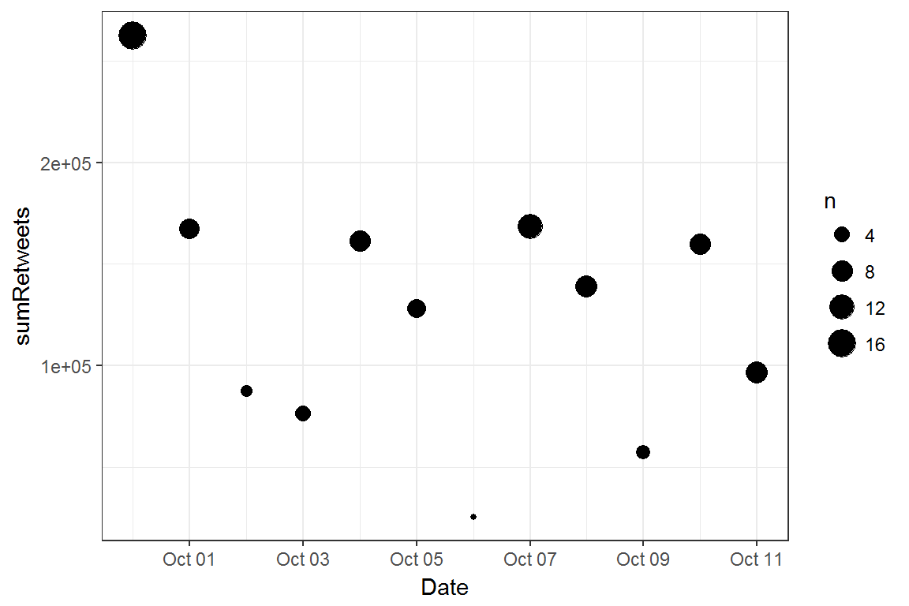
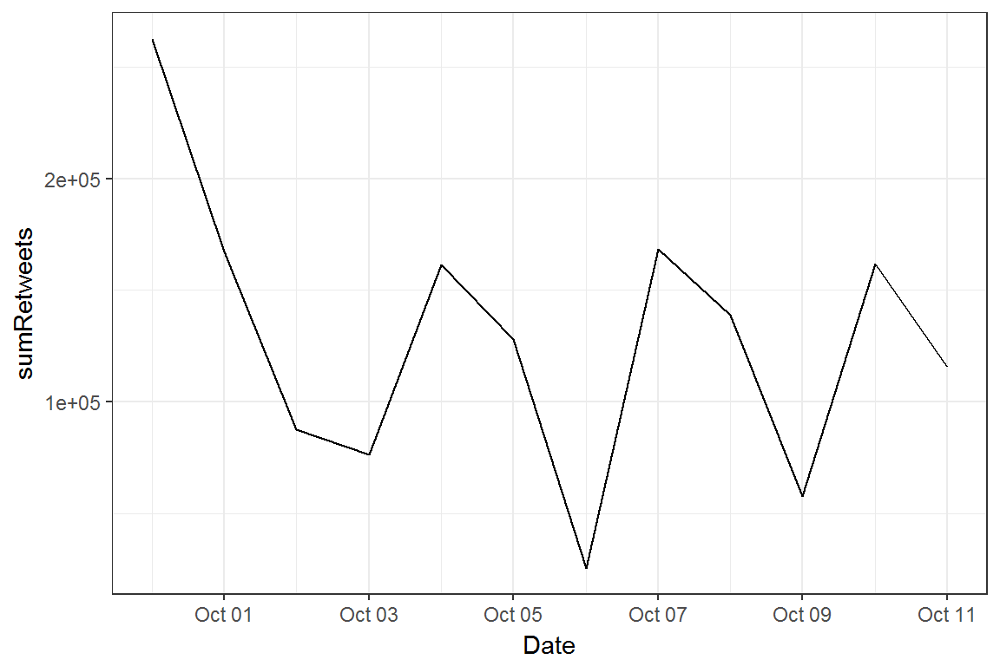
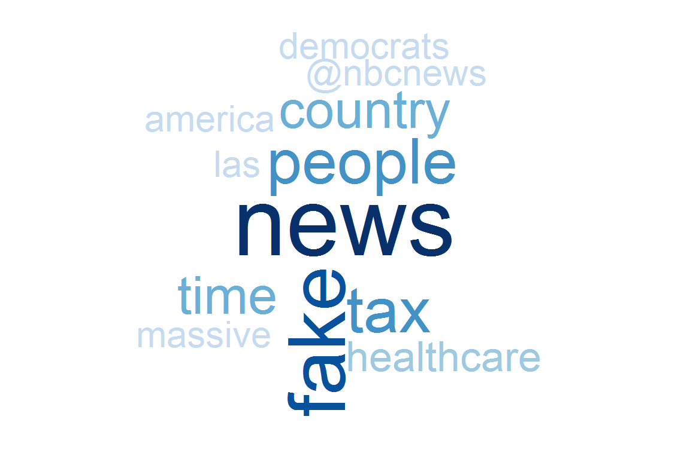

| Date | Tweet | Count |
|---|---|---|
| 2017-10-11 13:55:44 | With all of the Fake News coming out of NBC and the Networks, at what point is it appropriate to challenge their License? Bad for country! | 9552 |
| 2017-10-11 13:45:22 | Fake @NBCNews made up a story that I wanted a “tenfold” increase in our U.S. nuclear arsenal. Pure fiction, made up to demean. NBC = CNN! | 8628 |
| 2017-10-11 10:47:10 | It is about time that Roger Goodell of the NFL is finally demanding that all players STAND for our great National Anthem-RESPECT OUR COUNTRY | 11677 |
| 2017-10-11 10:36:37 | The Democrats want MASSIVE tax increases & soft, crime producing borders.The Republicans want the biggest tax cut in history & the WALL! | 11789 |
| 2017-10-11 10:31:18 | It would be really nice if the Fake News Media would report the virtually unprecedented Stock Market growth since the election.Need tax cuts | 9541 |
| 2017-10-11 10:26:50 | …if Congress gives us the massive tax cuts (and reform) I am asking for, those numbers will grow by leaps and bounds. #MAGA | 7111 |
